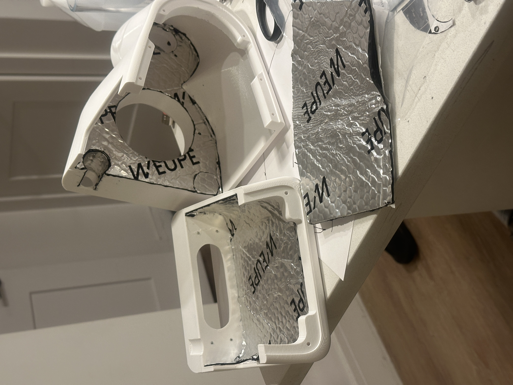
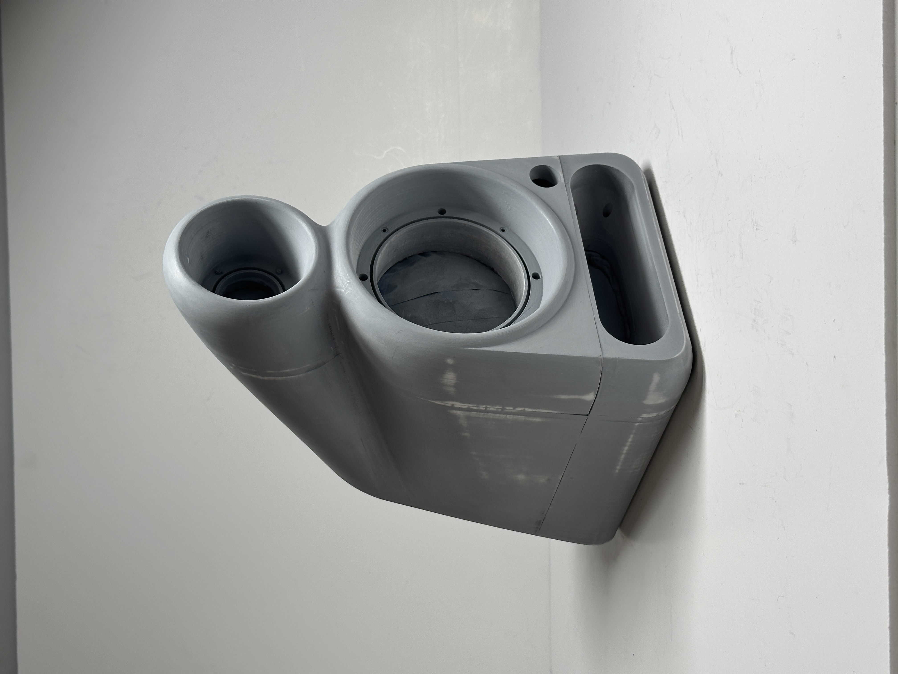
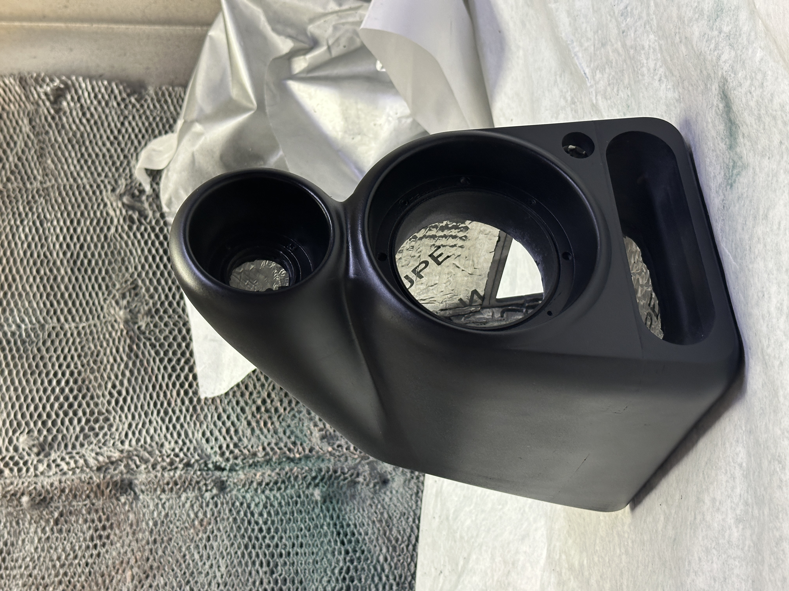
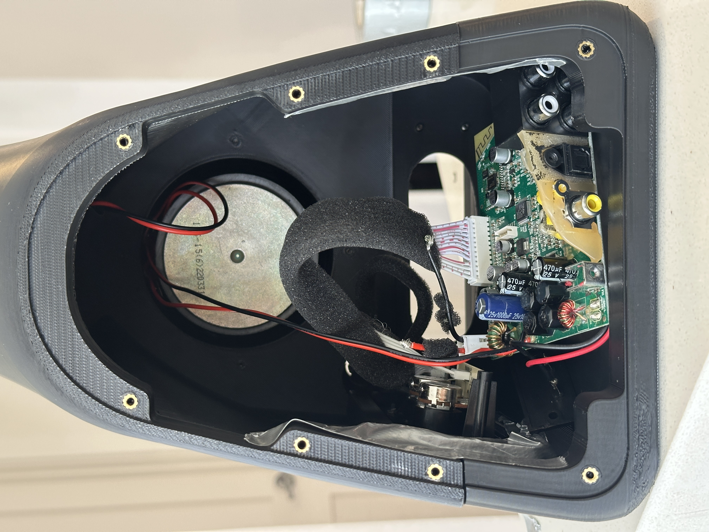
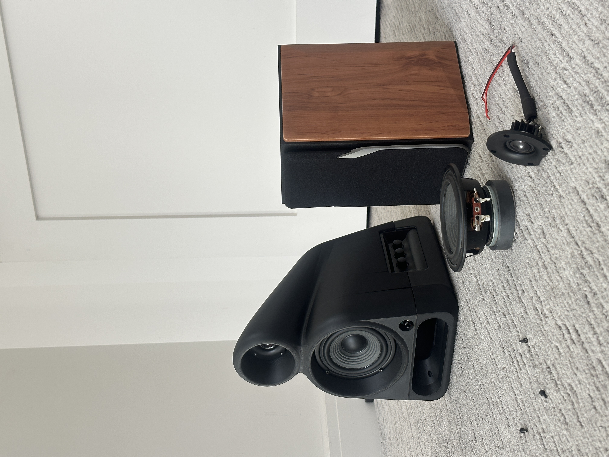

Dune
Why are we still trapping sound inside flat wooden boxes?
Conventional audio relies on flat MDF panels because wood naturally damps acoustic vibration. This comparative study explores whether FDM additive manufacturing can structurally and acoustically outperform that industry standard. To match the acoustic density of MDF, I ran intensive material experiments by tuning wall thicknesses, infill structures, and shell densities. By leveraging 3D printing's geometric freedom, I engineered an organic, optimized enclosure that eliminates internal standing waves. Supported by Room EQ Wizard testing, this project proves engineered printed geometry can technically match traditional acoustic performance while unlocking total aesthetic freedom.
Category Audio
Date 2026
Duration 5 Weeks
Skills Prototyping, Rhino, Keyshot, Acoustics
Most conventional speakers are designed to be boxy.
Parallel walls create internal standing waves that destroy sound clarity.

Choosing flat MDF-constructed box frames prioritizes cheap manufacturing over acoustic integrity. Parallel walls trap sound waves into internal echoes, generating severe standing waves that heavily color and distorts clarity.
Objective
How can we leverage 3D printing to build an organic speaker that acoustically outperforms standard bookshelf boxes?




Isolating the Control Group

To validate any acoustic performance leap, establishing a strict control group is mandatory. I disassembled the benchmark speaker to audit its internal architecture, treating the harvested electronics as that baseline. Transplanting these identical components isolated cabinet geometry as the single performance variable, proving any acoustic gains were achieved entirely by my structural architecture rather than a hardware upgrade. Internal volume, dimensions, and initial frequency sweep tests were mapped directly from the original wooden enclosure to set the exact benchmark the 3D-printed geometry would need to beat.
The More Inert the Better
To find an acoustically inert enclosure substrate, I used a custom-engineered impact rig. By dropping a steel pellet from a fixed height onto the center of each suspended material block, I delivered an identical mechanical impulse to every sample. I recorded the resulting frequency decay using Room EQ Wizard (REW) to measure exactly how fast each polymer naturally silenced itself.

The Infill Paradox 30% gyroid infill was the most acoustically inert. Its open internal geometry creates miniature air-damping chambers that absorb vibrations better than dense 40% or 50% + grids.
Walls Over Infill Using 6 solid outer walls increases structural bending stiffness far more efficiently than packing the inside with heavy, high-density infill.
Optimal Substrate ASA was chosen over PETG. While PETG absorbs impact vibrations well, its low flexural modulus allows the cabinet to flex under acoustic pressure. ASA’s rigid properties completely resist this flexing.
Design Driven by Data
Material testing parameters directly dictated the product’s internal architecture. Developed in Rhino, this unified monocoque enclosure utilizes specific geometric features to completely eliminate parasitic resonances while maximizing acoustic performance.

Integrated Waveguide Controls high-frequency dispersion and reduces harsh room reflections.
Non-Parallel Geometry The sloped back wall entirely prevents internal standing waves and muddy mid-range resonance.
Isolated Tweeter Chamber Protects the high-frequency driver from the intense back-pressure waves of the woofer.
Sandwich Wall Structure 6 walls paired with a 30% gyroid core to maximize structural stiffness and eliminate panel flex.
Mathematically Flared Port Extends low-frequency bass response while preventing aerodynamic wind noise (chuffing).


